A walk-through for teachers, with screenshots
Banded Grade ( local_bandedgrade ) scores a Moodle quiz by the number of questions a student got fully right, turns that number into a score using bands you choose, and puts the score in its own gradebook column.
For example, with 8 questions: 0–2 correct gives 0, 3–4 gives 1, 5–6 gives 2 and 7–8 gives 3. You can also grade by percentage, pass or fail, or give words from a scale, and colour the reports by band.
This guide follows a demo course (“Biology 101”) with two quizzes and twelve students, as seen by the teacher. Plugin version 0.10.2, Moodle 5.0 or later.
Student names are made-up demo data.
1 Open your quiz and choose Settings. Scroll to the section Grade by number correct (use Expand all if it is closed). You need the right to manage the gradebook to change it; other teachers can only see how it is set up.
2 Tick Grade by number correct. Everything else in the section appears.
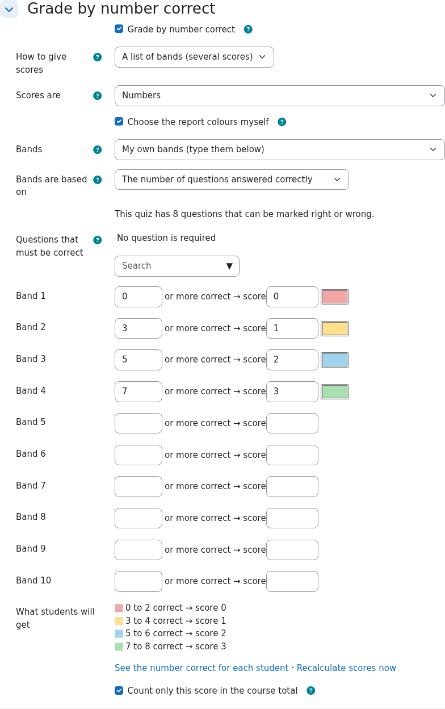
| Setting | What it does |
|---|---|
| How to give scores | A list of bands (several scores) or Pass or fail (one pass mark). |
| Scores are | Numbers, or the words of a gradebook scale (for example Fail, Pass, Merit). |
| Choose the report colours myself | Optional. Pick a colour for each band (section 4). |
| Bands | A ready-made set of bands, or My own bands that you type below. |
| Bands are based on | The number of questions answered correctly, or the percentage of questions answered correctly. |
| Questions that must be correct | Optional. A student who misses one of these gets the lowest score, whatever else they got right. |
Each band is a lower limit and a score: “from this many correct, the score is …”. Because you only type where each band starts, there can be no gaps or overlaps. The first band must start at 0.
In the demo quiz (8 questions) the bands are 0 → 0, 3 → 1, 5 → 2 and 7 → 3. Under the boxes, What students will get shows the result in plain words and updates while you type, so you can check it before saving. If a band starts higher than the number of questions, it warns you.
The Bands list offers presets (your administrator can add more). Picking one fills in the boxes; choose My own bands to type your own again. The quiz keeps its own copy, so later changes to a preset never change a quiz.
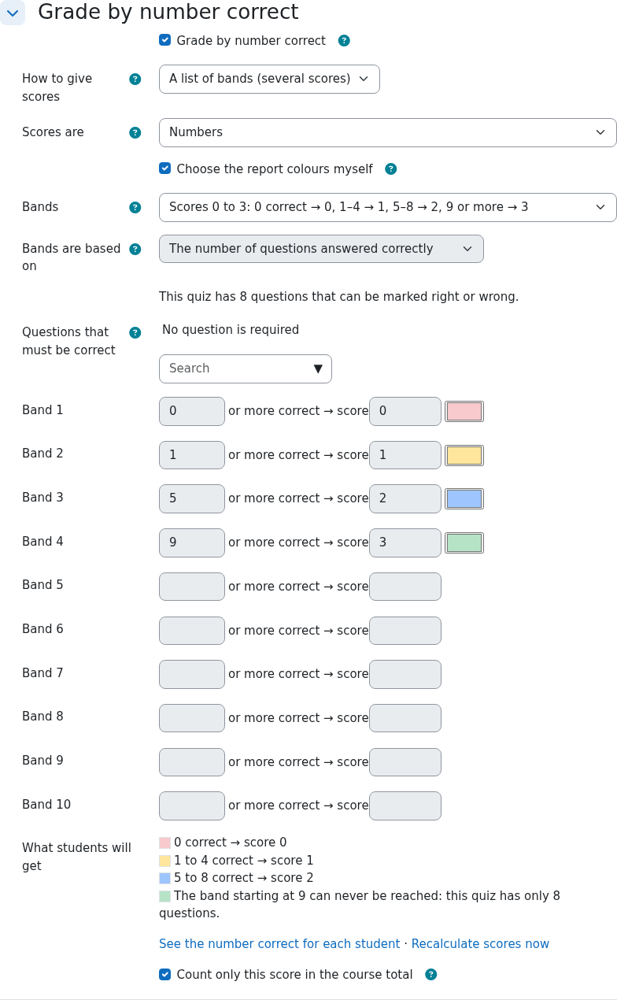
If you only need two outcomes, set How to give scores to Pass or fail. Type one pass mark (a number of questions, or a percentage), the score for a pass and the score for a fail. The plugin stores it as two bands, and the pass mark is also set as the gradebook column's grade to pass.
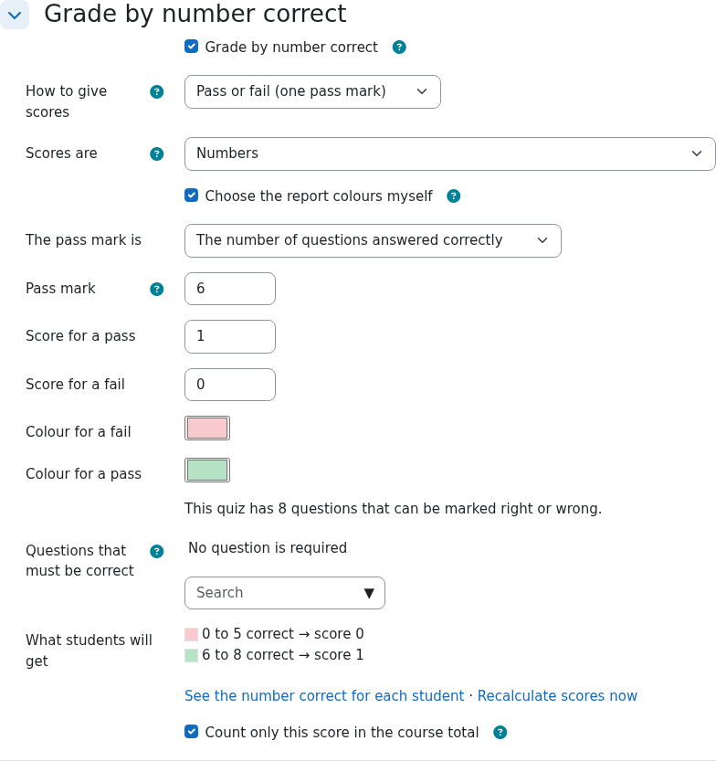
Tick Choose the report colours myself and a colour box appears next to each band (or next to Colour for a fail and Colour for a pass). Click a box to pick any colour. A student's grade is then coloured with the colour of the band it falls in, in the reports shown in sections 6 to 8, and the text turns white on a dark colour so it stays readable.
Press Save and display. The plugin creates a gradebook column called “<Quiz name> – score” and works out every student's score in the background. New and re-marked attempts are scored automatically from then on.
By default the quiz's own grade is given weight 0 (Count only this score in the course total), so only the band score counts towards the course total. In the figure below the “score” columns carry the weight and the quizzes' own grades carry 0%. This needs a gradebook category that uses Natural or Weighted mean; otherwise the plugin shows a warning.
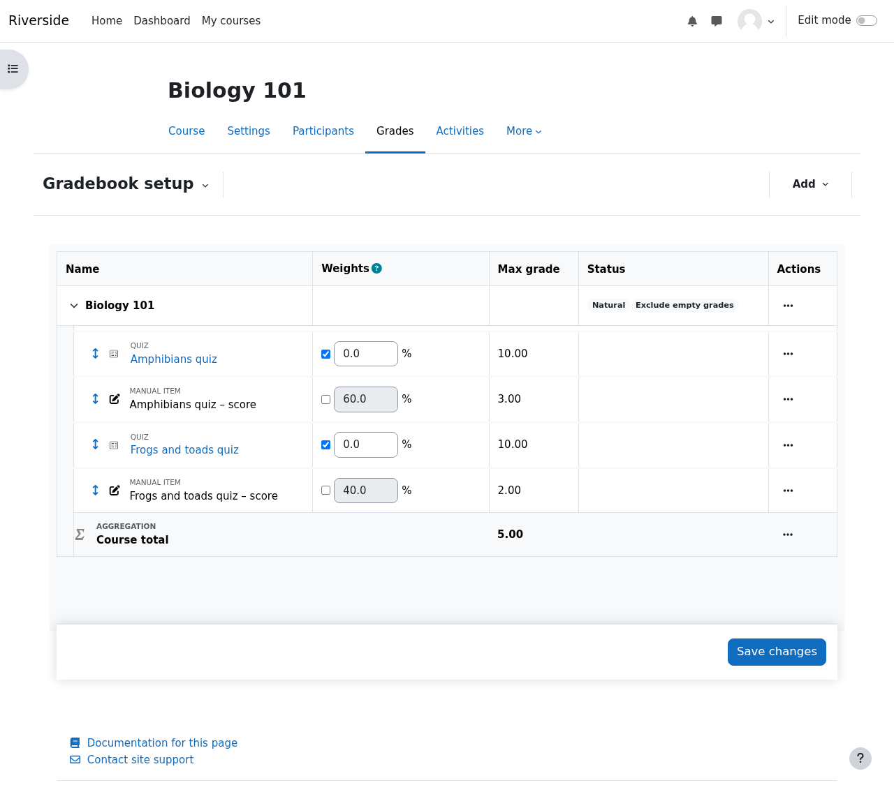
On the quiz page, open More and choose Number correct (Recalculate scores is in the same menu).
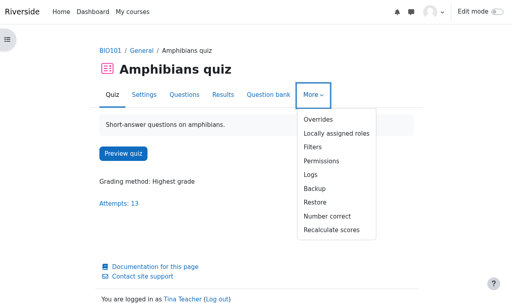
The page lists every student with the number correct in each attempt, the number used for the score, the percentage and the score in the gradebook.
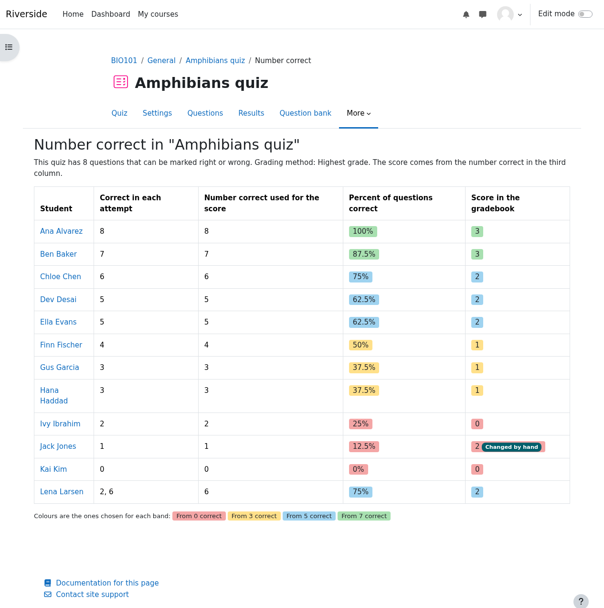
The second demo quiz (4 questions) uses bands on the percentage (0%, 50%, 90%) and the teacher chose no colours, so the percentage colours are used and the key explains them.
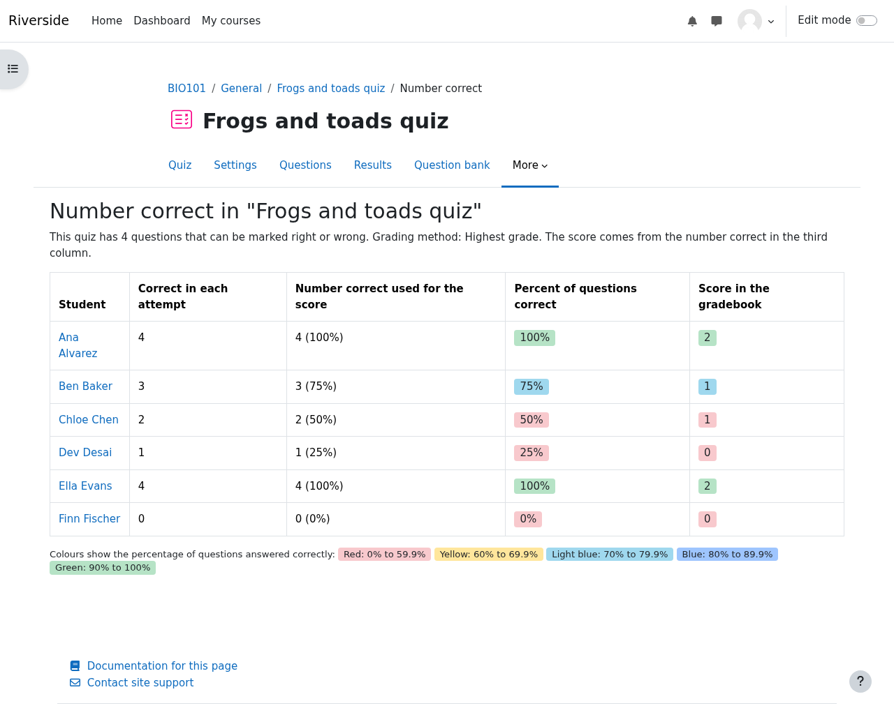
In Grades → Grader report each banded score is coloured, and hovering over a cell shows the percentage of questions correct. A colour key for every coloured quiz is shown under the table. The two demo quizzes use the two colour modes side by side.
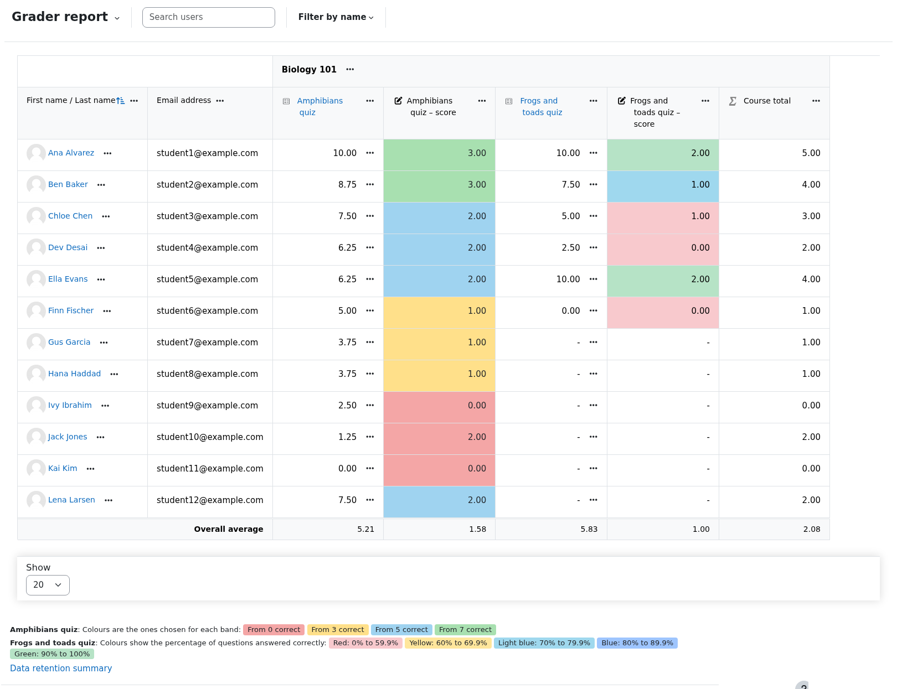
The Grades and Responses reports of the quiz colour the grade of every attempt with the colour of its band, so you can see at a glance how each attempt did. Each attempt is coloured by its own number correct, not only the one that sets the score.
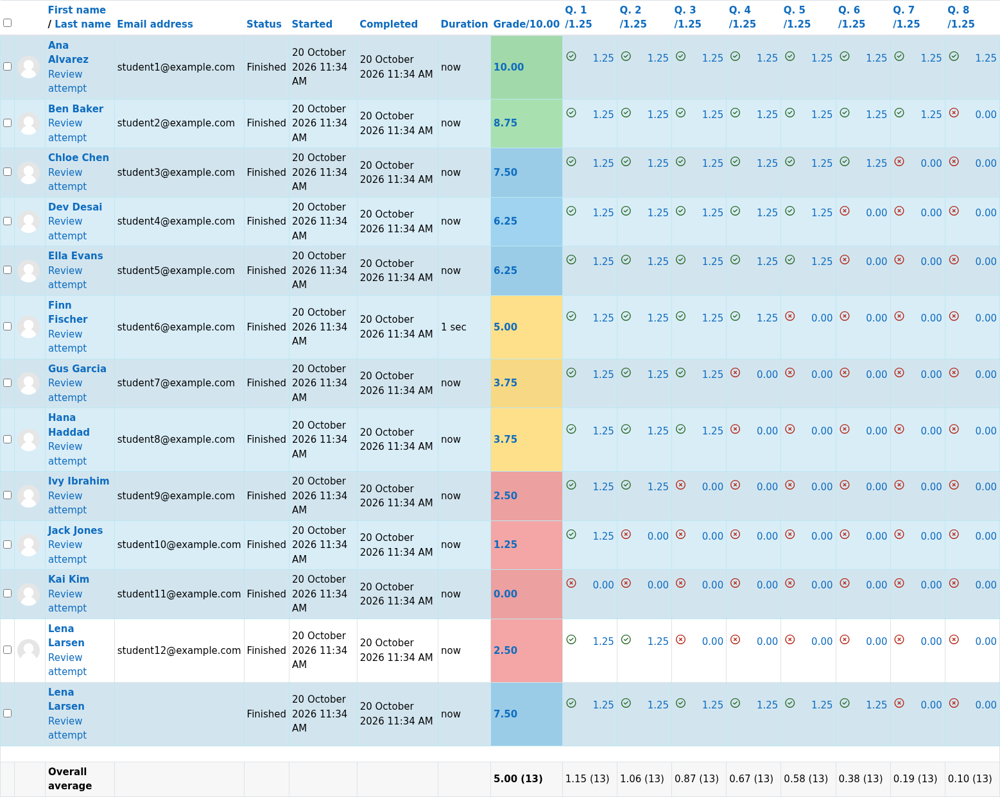
If you change the bands, the plugin rescores the quiz when you save. You can also run it by hand from More → Recalculate scores. Scores you changed by hand in the gradebook are respected by default; you can choose to replace them. The page lists which students would be affected.
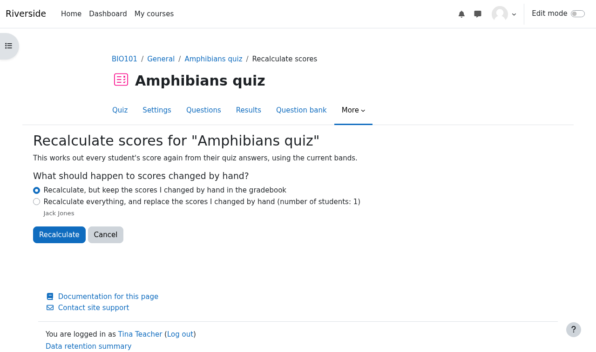
Students see the gradebook as usual, with the quiz's own grade and the new “… – score” item. They do not see the colours, the key or the Number correct page.
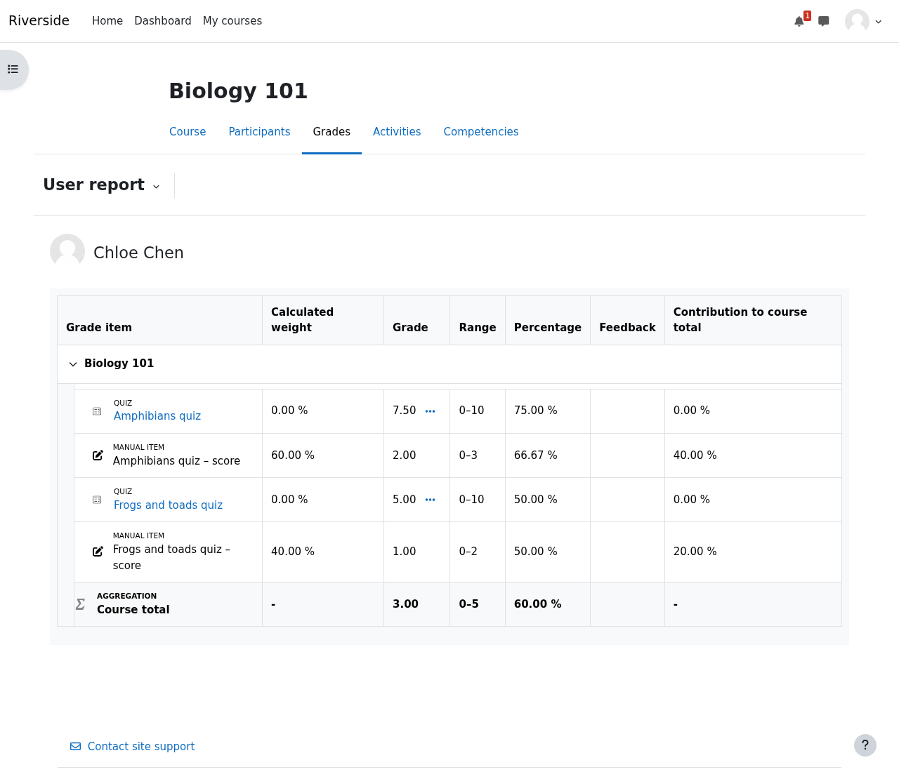
| I want to… | Do this |
|---|---|
| Grade a quiz by number correct | Quiz settings → Grade by number correct → tick it, choose or type bands, Save. |
| Grade by percentage instead | Set Bands are based on to the percentage of questions answered correctly and type percentages. |
| Only pass or fail | How to give scores → Pass or fail, then the pass mark and the two scores. |
| Give words instead of numbers | Scores are → choose a gradebook scale (it needs at least two words); then type a word or its position for each band. |
| Insist on certain questions | Questions that must be correct → pick them. Missing one gives the lowest score. |
| Pick my own colours | Tick Choose the report colours myself and pick a colour for each band. |
| See every student's count | Quiz → More → Number correct. |
| Rescore after changing something | Quiz → More → Recalculate scores. |
| Keep the quiz's own grade in the course total | Untick Count only this score in the course total. |